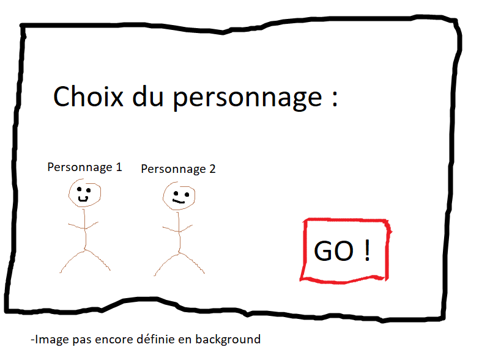
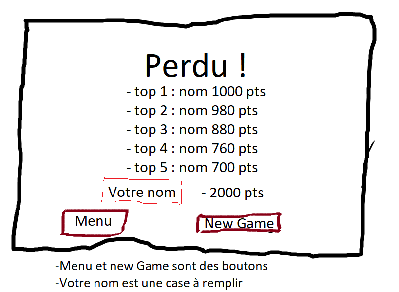

Maquette visuelle de votre projet
Par Victor Bonny le 09/03/2019 à 11:00
Le jeu se découe en trois partie principale
Premièrement, il y a un menu où le joueur peut sélectionner un personnage et lancer le jeu.

Deuxièmement, c'est toute la partie jeu ou la personne peut jouer. La jouabilité et plutôt simple. Le personnage cours automatiquement et le terrain défile également tout seul donc le joueur a juste a géré les obstacles en sautant.

Finalement, quand le personne perd (son personnage est "mort") il arrive sur une nouvelle fenêtre qui montre les top 5 scores du jeu et laisse la possibilité au joueur d'inscrire son nom afin de stocker également le sien. Si il a un meilleur score que les 5 top, il sera inscrit au classement. Ensuite, sur cette même page, on peut relancer une partie ou aller au menu.

Le code source de l'application est disponible sur le github du projet.